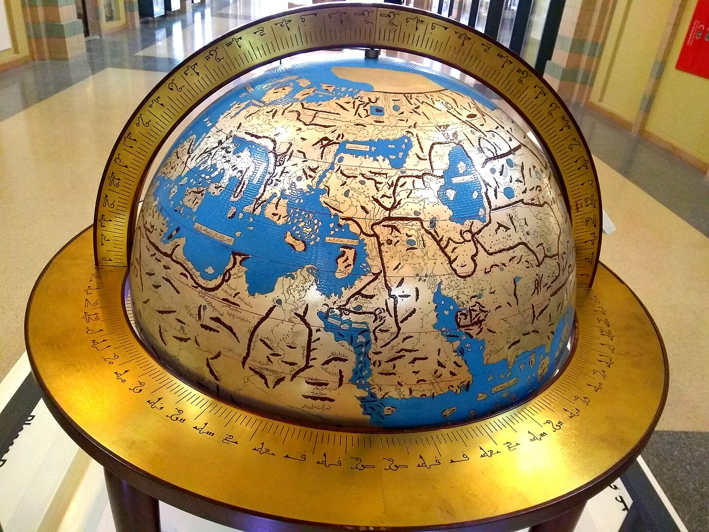
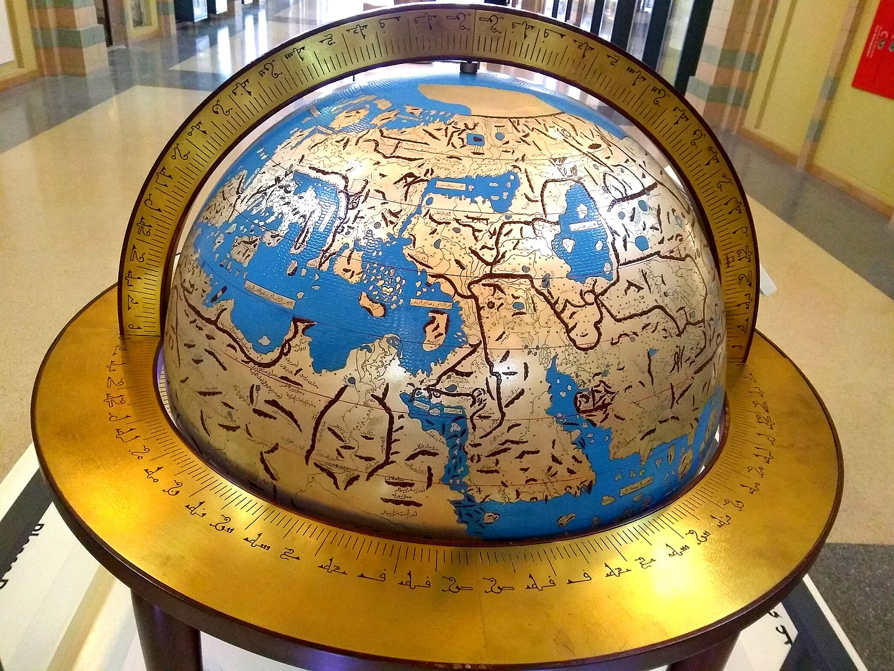

La Plateforme_io
votre studio de webdesign documentaire
Nos dernières réalisations
 

Ibn-Khaldoun
Il est aussi un historien de premier plan. Dans ces deux ouvrages résolument modernes dans leur méthode, il insiste dès le début sur l'importance des sources, de leur authenticité et de leur vérification à l'aune de critères purement rationnels. Les savants européens du XIXe siècle reconnaissent l'importance des Prolégomènes, et considèrent Ibn Khaldoun comme l'un des plus grands philosophes du Moyen Âge10,11. Georges Marçais affirme que l'œuvre d'Ibn Khaldoun est « un des ouvrages les plus substantiels et les plus intéressants qu'ait produits l'esprit humain »12,1
Al-Idrissi
En effet, si la réputation d’al-Idrīsī comme géographe arabo-musulman n’est plus à faire, sa vie est très mal connue, ce qui rend difficile l’établissement de ses différentes phases. Nous nous arrêterons donc à nouveau ici sur al-Idrīsī avant al-Idrīsī, c’est-à-dire avant la célèbre date de 1154, censée être celle de la fin de la rédaction de sa géographie, une date aussi connue que problématique, en avançant de nouveaux arguments en faveur d’origines siciliennes d’al-Idrīsī. Sa biographie après cette date sera revue à la lumière de nouvelles hypothèses concernant sa production sicilienne postérieure.